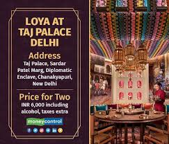

RESTAURANT INFORMATION PAGE
indian restaurant

Time travel is the hypothetical activity of traveling into the past or future. Time travel is a widely recognized concept in philosophy and fiction, particularly science fiction. In fiction, time travel is typically achieved through the use of a hypothetical device known as a time machine. The idea of a time machine was popularized by H. G. Wells's 1895 novel The Time Machine.[1]
reddys restuarant
.jpeg)
The memories of a grandmother's kitchen linger long after the aromas that inspire them. Pillowy idlis in jackfruit leaf baskets. Ghee in a delicious shade of golden. Gunpowder chutney, freshly made, in empty Bournvita bottles since stripped of their plastic labels. At Telugu Medium, many of these memories, or at least the sentiment behind them, find expression in unexpected moments, evoking a nostalgia that, even mid-bite, eludes your acute consciousness. The authentic Andhra restaurant, located in Hyderabad’s swish Jubilee Hills, is humble, unpresuming, even austere. And yet, there’s something about it that immediately warms you.
loya restuarant

"Loya is a North Indian restaurant in Bangalore serving the North's most cherished recipes. Reserve a table now and experience the taste from the foothills of the Himalayas to the flat terrain of Punjab."
time traveller
"Loya is a North Indian restaurant in Bangalore serving the North's most cherished recipes. Reserve a table now and experience the taste from the foothills of the Himalayas to the flat terrain of Punjab."